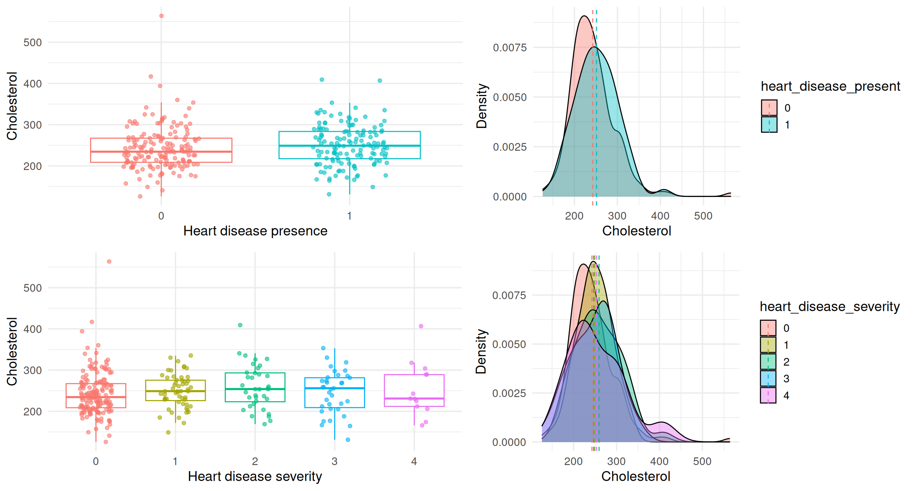
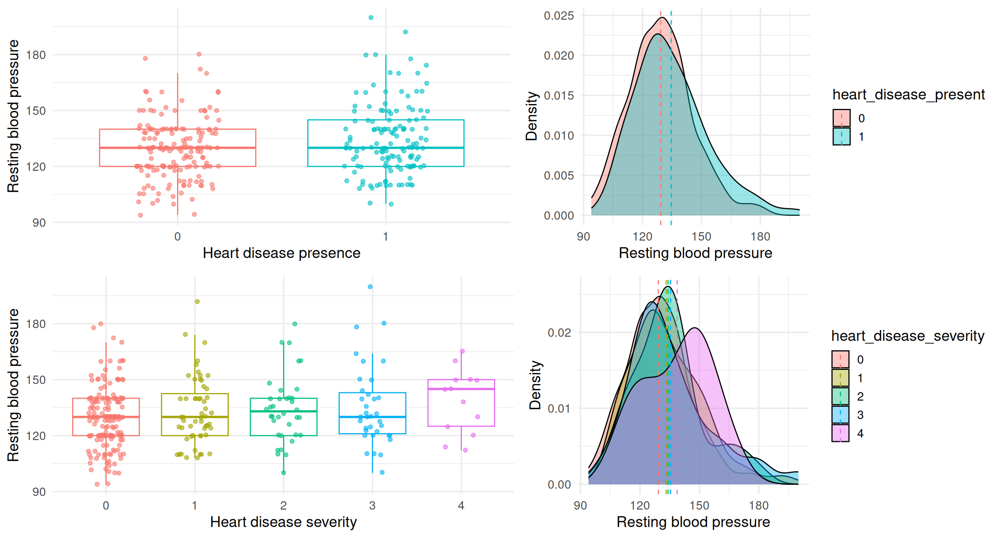
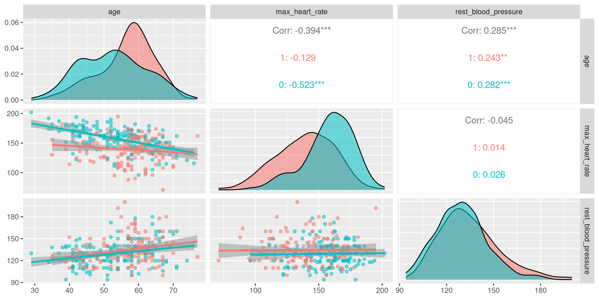
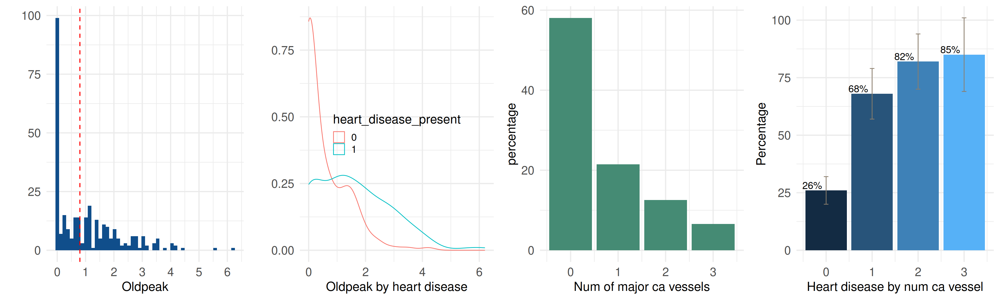
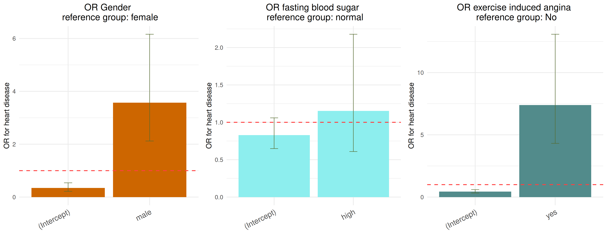
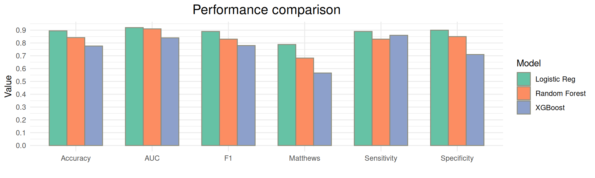
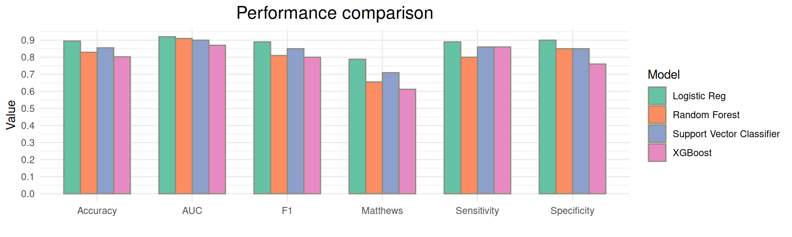

Heart disease analysis in R
Khadija Musayeva
2025-04-17
About Data Analysis Report
This RMarkdown file contains contains data exploration, data visualization, statistical/epidemiological and predictive modeling analyses of Cleveland heart disease data.
Data Description:
The following description is from the paper Detrano et al. (1989).
The dataset contains clinical and test data of \(303\) patients referred for coronary angiography at the Cleveland Clinic between May 1981 and September 1984. No patient had a history or electrocardiographic evidence of prior myocardial infarction or known valvular or cardiomyopathic disease.
Clinical variables are: age, sex, systolic blood pressure, chest pain type classified as typical angina, atypical angina, nonanginal, asymptomatic.
Routine test data are: serum cholesterol, fasting blood sugar >120 mg/dl and electrocardiographic results at rest classified as (1) normal; (2) ST-T-wave abnormality; or (3) probable or definite left ventricular hypertrophy by Estes’ criteria.
Exercise data are: maximal heart rate, exercise-induced angina, slope of the peak exercise ST segment (upsloping, flat or downsloping), exercise thallium scintigraphic defects (fixed, reversible or none).
Fluoroscopic data are the number of major vessels that appeared to contain calcium.
We note that the cut-off threshold for fasting blood sugar, which is 120 mg/dL in this 1989 dataset, might be lower according to current medical standards.
Data preprocessing and analysis
Install and load packages
### we use pacman to install and load the required packages
if (!require("pacman")) install.packages("pacman")
pacman::p_load("caret", "data.table", "DescTools", "egg", "epitools", "GGally", "ggplot2", "gridExtra", "kableExtra", "magrittr", "mlbench", "mltools", "naniar", "parsnip", "pROC", "ranger", "reshape2", "recipes", "rsample", "shiny", "smotefamily", "themis","tidymodels", "tune", "viridis", "workflows", "yardstick", "xgboost")
source("utils.R")Load the data
Read the data and check its dimensions.
dat <- as.data.frame(read.csv("processed_cleveland.csv"))
cat("There are", nrow(dat), "samples and", ncol(dat), "input variables in the heart data.")## There are 303 samples and 14 input variables in the heart data.What are the types of these variables?
sapply(dat, class)## age sex cp trestbps chol fbs
## "integer" "integer" "integer" "integer" "integer" "integer"
## restecg thalach exang oldpeak slope ca
## "integer" "integer" "integer" "numeric" "integer" "character"
## thal num
## "character" "integer"We will rename the columns to render to match more or less their description.
names(dat) <- c("age", "sex", "chest_pain_type", "rest_blood_pressure", "cholesterol", "fasting_blood_sugar", "restecg", "max_heart_rate", "exercise_induced_angina", "oldpeak", "slope", "num_major_vessels", "nuclear_stress_test", "heart_disease")
str(dat)## 'data.frame': 303 obs. of 14 variables:
## $ age : int 63 67 67 37 41 56 62 57 63 53 ...
## $ sex : int 1 1 1 1 0 1 0 0 1 1 ...
## $ chest_pain_type : int 1 4 4 3 2 2 4 4 4 4 ...
## $ rest_blood_pressure : int 145 160 120 130 130 120 140 120 130 140 ...
## $ cholesterol : int 233 286 229 250 204 236 268 354 254 203 ...
## $ fasting_blood_sugar : int 1 0 0 0 0 0 0 0 0 1 ...
## $ restecg : int 2 2 2 0 2 0 2 0 2 2 ...
## $ max_heart_rate : int 150 108 129 187 172 178 160 163 147 155 ...
## $ exercise_induced_angina: int 0 1 1 0 0 0 0 1 0 1 ...
## $ oldpeak : num 2.3 1.5 2.6 3.5 1.4 0.8 3.6 0.6 1.4 3.1 ...
## $ slope : int 3 2 2 3 1 1 3 1 2 3 ...
## $ num_major_vessels : chr "0" "3" "2" "0" ...
## $ nuclear_stress_test : chr "6" "3" "7" "3" ...
## $ heart_disease : int 0 2 1 0 0 0 3 0 2 1 ...From the description of the dataset, two variables, number of major vessels and results of nuclear stress test, have missing values, we convert these values to NA.
dat$num_major_vessels <- as.integer(dat$num_major_vessels)## Warning: NAs introduits lors de la conversion automatiquedat$nuclear_stress_test <- ifelse(dat$nuclear_stress_test=="?", NA, dat$nuclear_stress_test)We convert the categorical variables, sex, chest pain type, fasting blood sugar, resting electrocardiograph results, exercise induced angina, nuclear stress test results, and also heart disease state to factor.
cat_vars <- c("sex", "chest_pain_type", "fasting_blood_sugar", "restecg", "exercise_induced_angina", "slope", "nuclear_stress_test")
dat[cat_vars] <- lapply(dat[cat_vars] , factor)
dat$heart_disease_present <- factor(ifelse(dat$heart_disease > 0, 1, 0), levels=c(0, 1))
### convert all values greater than 0 to 1 for binary classification
dat %<>% rename(heart_disease_severity = heart_disease) %>% mutate(heart_disease_severity = factor(heart_disease_severity))Recode the values of some categorical variables to make them more interpretable in the plots.
dat %<>%
mutate(
sex = recode(sex, `1` = "male", `0` = "female"),
chest_pain_type = recode(chest_pain_type, `1` = "typical angina", `2` = "atypical angina", `3`="non-anginal", `4`="asymptomatic"),
fasting_blood_sugar = recode(fasting_blood_sugar, `1` = "high", `0` = "normal"),
exercise_induced_angina = recode(exercise_induced_angina, `1` = "yes", `0` = "no"),
restecg = recode(restecg, `0`="normal", `1`="abnormal", `2`="hypertrophy"),
nuclear_stress_test = recode(nuclear_stress_test, `3`="normal", `6`="fixed defect", `7`="reversible defect"),
slope = recode(slope, `1`="up-slope", `2`="flat", `3`="down-slope")
)
kable(head(dat), "html") %>%
kable_styling(font_size = 12, stripe_color = "gray!10") %>%
scroll_box(width = "100%", height = "300px")| age | sex | chest_pain_type | rest_blood_pressure | cholesterol | fasting_blood_sugar | restecg | max_heart_rate | exercise_induced_angina | oldpeak | slope | num_major_vessels | nuclear_stress_test | heart_disease_severity | heart_disease_present |
|---|---|---|---|---|---|---|---|---|---|---|---|---|---|---|
| 63 | male | typical angina | 145 | 233 | high | hypertrophy | 150 | no | 2.3 | down-slope | 0 | fixed defect | 0 | 0 |
| 67 | male | asymptomatic | 160 | 286 | normal | hypertrophy | 108 | yes | 1.5 | flat | 3 | normal | 2 | 1 |
| 67 | male | asymptomatic | 120 | 229 | normal | hypertrophy | 129 | yes | 2.6 | flat | 2 | reversible defect | 1 | 1 |
| 37 | male | non-anginal | 130 | 250 | normal | normal | 187 | no | 3.5 | down-slope | 0 | normal | 0 | 0 |
| 41 | female | atypical angina | 130 | 204 | normal | hypertrophy | 172 | no | 1.4 | up-slope | 0 | normal | 0 | 0 |
| 56 | male | atypical angina | 120 | 236 | normal | normal | 178 | no | 0.8 | up-slope | 0 | normal | 0 | 0 |
The plot below indicates that there are \(6\) missing values: \(2\) in nuclear stress test results and \(4\) in number of major vessels.
The following plots show the distribution of the missing values with respect to two variables: sex and heart disease.
The missing values of number of major vessels concern only males mostly without heart disease, while those in the results of nuclear stress test are distributed among both: \(1\) in male with heart disease and \(1\) in female without heart disease.
Visualization
Categorical Variable
The following plot illustrates the distribution of observations across all categorical variables. We see that heart disease of some gravity is present in \(46\%\), almost half of the individuals and \(4\%\) percent of these individuals have severe case of heart disease. There are more males than females in this dataset: \(68\%\) of observations.

The prevalence of heart disease cases across all categorical variables.
The following plot shows that \(55\%\) of males have heart disease. Heart disease is present in \(73\%\) of asymptomatic cases. \(31\%\) of individuals who does not experience chest pain during physical exertion, at the \(120\) mg/dL cut-off threshold, almost half of the individuals below the threshold of \(120\) mg/dL, \(37\%\) of patients with normal electrocardiographic results, \(31\%\) of patients with normal nuclear stress test results have heart disease.
Distribution of age, cholesterol, maximum heart rate and resting blood pressure.
The distributions of age, cholesterol levels and resting blood pressure are almost bell shaped. The middle \(50\%\) of age variable is somewhere between \(50\) and \(60\) years old, the maximum age is \(77\) years old. The middle \(50\%\) of cholesterol is between \(211\) and \(275\), the middle \(50\%\) of maximum heart rate is between \(134\) and \(166\), and the middle \(50\%\) of resting blood pressure is between \(120\) and \(140\). There is an outlier point in cholesterol variable with the value above \(500\). In blood pressure variable the points with the value around \(200\) stand out.

The following plot shows that there is not much difference between cholesterol levels across the levels of heart disease status.
Regarding the blood pressure, the distribution of the one corresponding to heart disease severity of 4 stands out, its median is much higher close to 150, and there is no much difference between those <4.

Maximal heart rates of individuals with heart disease tend to be lower than those without. The density plot of maximal heart distribution of individuals without heart disease is shifted to the right. Separating this variable further across the severity of heart disease, we see that the median maximal heart rates of those with severity of \(3\) and \(4\), are situated further belows than those with lesser severity.

Is the difference between the mean maximal heart rates of the two groups with and without heart disease statistically significant?
Checking for normality visually using qqplot shows that the maximal heart rate of group with no heart disease deviates from normality as it is also clear from the density plot above. The p-values obtained from Shapiro-Wilk test of normality also confirms this.
Next, we use an F-test to test the assumption of equal variances between individuals with and without heart disease. It shows that the variances of two groups are unequal (p = 0.05), and thus we would be better off using Welch t-test to compare the maximum heart rate between individuals without heart disease and those with heart disease.
Welch t-test shows a significant difference in mean maximum heart rate between the two groups: the mean maximum heart rate is \(158.4\) bpm in the no-disease group, compared to \(139.3\) bpm in the heart disease group. The \(95\%\) confidence interval for the difference in means is [-23.91, -14.33], indicating that individuals with heart disease tend to have significantly lower maximum heart rates.
## Alternative hypothesis: true ratio of variances is not equal to 1, p-value: 0.05##
## Welch Two Sample t-test
##
## data: max_heart_rate by factor(heart_disease_present, levels = c(1, 0))
## t = -7.8579, df = 272.27, p-value = 9.106e-14
## alternative hypothesis: true difference in means between group 1 and group 0 is not equal to 0
## 95 percent confidence interval:
## -23.90912 -14.32900
## sample estimates:
## mean in group 1 mean in group 0
## 139.259 158.378The median age of individuals with heart disease is higher, close to 60, than those without one, however overall these two class-conditional distributions overlap.

According to Welch t-test the difference in the mean age between the two groups is statistically significant. The mean age is \(56.6\) in the no-disease group, compared to \(52.6\) in the heart disease group, and the \(95\%\) confidence interval for the difference in means is [\(2\), \(6\)], showing that individuals with heart disease tend to be of older age.

##
## Welch Two Sample t-test
##
## data: age by factor(heart_disease_present, levels = c(1, 0))
## t = 4.0303, df = 300.93, p-value = 7.061e-05
## alternative hypothesis: true difference in means between group 1 and group 0 is not equal to 0
## 95 percent confidence interval:
## 2.067682 6.013385
## sample estimates:
## mean in group 1 mean in group 0
## 56.62590 52.58537Pairwise Plots
Next, we analyze pairwise relationships between these variables conditioned on heart disease variable. Independent of heart condition, maximum heart rate decreases with age, and those of individuals with heart disease tend to be lower.

The linear regression model of maximum heart rate as a dependent variable of age and heart disease predictors shows that with each additional year of age the maximum heart rate decreases by 0.8 bpm on average. For a given age, heart disease patients have, on average, 15.9 bpm lower maximum heart rate than those without heart disease.
##
## Call:
## lm(formula = max_heart_rate ~ age + heart_disease_present, data = dat)
##
## Residuals:
## Min 1Q Median 3Q Max
## -59.950 -11.799 2.551 12.898 53.638
##
## Coefficients:
## Estimate Std. Error t value Pr(>|t|)
## (Intercept) 200.4965 6.9102 29.014 < 2e-16 ***
## age -0.8010 0.1281 -6.251 1.40e-09 ***
## heart_disease_present1 -15.8828 2.3205 -6.845 4.33e-11 ***
## ---
## Signif. codes: 0 '***' 0.001 '**' 0.01 '*' 0.05 '.' 0.1 ' ' 1
##
## Residual standard error: 19.62 on 300 degrees of freedom
## Multiple R-squared: 0.2692, Adjusted R-squared: 0.2643
## F-statistic: 55.26 on 2 and 300 DF, p-value: < 2.2e-16The following plots display the distributions of ST depression induced by exercise relative to rest, which is oldpeak variable, and the number of major vessels which appeared to contain calcium.
The class-conditional density plot shows that individuals without heart disease tend to have oldpeak values concentrated close to \(0\), with the majority falling between \(0\) and \(1\). In contrast, those with heart disease show a broader distribution, with oldpeak values more spread out and generally higher. As the number of major vessels that appeared to contain calcium increases, the prevalence of heart disease in the corresponding group increases: \(85\%\) of patients with \(3\) such vessels have heart disease.

Epidemiological Analysis
In this section, we do odds ratio (OR) analysis of association between variables.
(Unadjusted) Odds Ratio
The outcome of interest is heart disease, and the exposures are: sex, fasting glucose level, exercise induced angina, slope, chest pain type, and nuclear stress test.
The results are summarized in a table output and illustrated by barplot with \(95\%\) condifence interval.
Regarding the sex of individuals, the odds of heart disease in males is \(3.5\) times that in females.
Compared to individuals with normal fasting blood sugar level, those with high level have \(1.15\) times the odds of heart disease. However, this difference is not statistically significant, the data do not support a clear association between high fasting blood sugar level and heart disease risk.
Odds of heart disease in individuals who experience exercise induced angina is \(7.3\) times higher than in those who do not experience exercise induced angina.
Plot

Table
| Variable | Category | Odds Ratio | 95% CI (Lower) | 95% CI (Upper) | P-value |
|---|---|---|---|---|---|
| Gender | (Intercept) | 0.347 | 0.216 | 0.539 | 0.000 |
| Gender | male | 3.569 | 2.121 | 6.159 | 0.000 |
| Fasting blood sugar | (Intercept) | 0.830 | 0.649 | 1.060 | 0.136 |
| Fasting blood sugar | high | 1.153 | 0.609 | 2.178 | 0.660 |
| Exercise induced angina | (Intercept) | 0.447 | 0.330 | 0.598 | 0.000 |
| Exercise induced angina | yes | 7.395 | 4.314 | 13.079 | 0.000 |
(Unadjusted) Odds Ratio with Multinomial Variables
Here we consider odds ratio analysis regarding multinomial categorical variables: slope, chest pain type, nuclear stress test and electrocardiographic results at rest.
For slope variable, upslope is the reference group. The following result shows that odds of heart disease in upslope group is \(0.34\) than in those not in upslope: \((1-1/5.47)*100= 82\%\) lower than the flat group and \((1-1/3.93)*100= 75\%\) lower than the downslope group. Odds of heart disease in flat group is \(5.4\) times higher than upslope group and odds of heart disease in downslope group is \(3.9\) times higher than upslope group. Note that the confidence interval for downslope group is larger, since this group contains a small number of individuals.
Compared to individuals with typical angina, those with asymptomatic presentation have significantly higher odds of heart disease: 6.15 times that with typical angina. In contrast, those with atypical angina (OR = 0.50) and non-anginal pain (OR = 0.61) have lower but non-significant odds of heart disease.
Compared to individuals with normal nuclear stress test results, those with a fixed defect have \(7\) times greater odds of heart disease, while those with a reversible defect have \(11\) greater odds. These results are highly statistically significant and align with clinical understanding that reversible defects indicate myocardial ischemia.
Plot
Table
| Variable | Category | Odds Ratio | 95% CI (Lower) | 95% CI (Upper) | P-value |
|---|---|---|---|---|---|
| Slope | (Intercept) | 0.340 | 0.230 | 0.490 | 0.000 |
| Slope | flat | 5.468 | 3.300 | 9.229 | 0.000 |
| Slope | down-slope | 3.926 | 1.538 | 10.368 | 0.004 |
| Chest pain type | (Intercept) | 0.438 | 0.168 | 1.025 | 0.068 |
| Chest pain type | atypical angina | 0.502 | 0.159 | 1.614 | 0.237 |
| Chest pain type | non-anginal | 0.605 | 0.221 | 1.772 | 0.339 |
| Chest pain type | asymptomatic | 6.154 | 2.434 | 17.077 | 0.000 |
| Nuclear stress test | (Intercept) | 0.287 | 0.196 | 0.409 | 0.000 |
| Nuclear stress test | fixed defect | 6.973 | 2.531 | 21.225 | 0.000 |
| Nuclear stress test | reversible defect | 11.082 | 6.412 | 19.708 | 0.000 |
| Restecg | (Intercept) | 0.589 | 0.421 | 0.817 | 0.002 |
| Restecg | abnormal | 5.089 | 0.635 | 104.243 | 0.163 |
| Restecg | hypertrophy | 1.996 | 1.260 | 3.180 | 0.003 |
Adjusted Odds Ratio
Now, we take into account all predictors in the logistic regression model to compute OR of heart disease. Feature selection process based on Akaike’s information criterion removes restecg and age variables.
Statistically important predictors of odds of heart disease are sex, chest pain type, resting blood pressure, maximum heart rate, oldpeak, number of major ca vessels, and nuclear stress test results.
Holding other variables constant,
males have \(4\) times the odds of heart disease compared to females
individuals with asymptomatic presentation have \(7\) times the odds of heart disease compared to those with typical angina
each \(1\) mmHg increase in resting blood pressure is associated with a \(2.1\%\) increase in the odds of heart disease
each \(1\) bpm increase in max heart rate is associated with a \(2.3\%\) decrease in the odds of heart disease
for every \(1\) unit increase in ST depression, the odds of heart disease increase by \(71\%\)
each additional major vessel visible via fluoroscopy triples the odds of heart disease
individuals with a reversible defect on a nuclear stress test have \(4\) times higher odds of heart disease compared to those with normal results.
| term | estimate | p.value |
|---|---|---|
| (Intercept) | 0.009 | 0.037 |
| sexmale | 4.037 | 0.004 |
| chest_pain_typeasymptomatic | 6.988 | 0.002 |
| rest_blood_pressure | 1.021 | 0.044 |
| max_heart_rate | 0.977 | 0.016 |
| oldpeak | 1.709 | 0.008 |
| num_major_vessels | 2.990 | 0.000 |
| nuclear_stress_testreversible defect | 4.136 | 0.000 |
Predictive Modeling
Evaluation Measures
Apart from the standard classification accuracy, the measures that we use for performance evaluation are sensitivity, specificity, F1-measure, area under the ROC curve, Matthews correlation coefficient and accuracy. Sensitivity measures the proportion of individuals correctly identified as having heart disease among those who actually have heart disease, and specificity measures the proportion of individuals correctly identified as healthy among those who are actually healthy. These measures take values between \(0\) and \(1\).
Sensitivity is also known as recall. Precision computes the fraction of true positives in all positively predicted outputs (i.e., true and false positives). The F1-measure is the harmonic mean of precision and recall, it balances precision and recall. But notice that if the specificity is 1 and the sensitivity is 0, then the precision is undefined, since there is neither true positives or false positives predicted, and thus, F1 measure is not defined.
Next, we consider the area under the ROC curve. This curve draws sensitivity against false positive rate (1-specificity) at every cut-off threshold level for predicted probability values, and the larger the area under this curve the better the predictive performance of algorithm.
Finally, Matthews correlation coefficient is computed based on the entire confusion matrix, i.e., it takes into account true positives, false positives, true negatives and false negatives.
Data Split
We split the data into \(75\%\) training and \(25\%\) test set using rsample package of tidymodels framework. In what follows, we use set.seed to ensure reproducibility.
set.seed(123)
dat <- dat %>% select(-heart_disease_severity)
dat_split <- initial_split(dat, prop = 3/4, strata = heart_disease_present)
dat_train <- training(dat_split)
dat_test <- testing(dat_split)
dat_cv <- vfold_cv(dat_train)Models
We use logistic regression, and models of higher capacity capable of learning non-linear decision boundaries, such as random forest and an improved version of the gradient boosting method, extreme gradient boosting. The latter models are particularly suitable for data with many categorical variables.
We use the parsnip package of tidymodels to train the models, and the dials package to do grid search for hyperparameter tuning.
Logistic Regression
Dropping age, resting electrocardiogram results and slope predictors improves the performance of logistic regression.
ground_truth <- factor(dat_test$heart_disease_present, levels=c(1, 0)) # set the ground truth
dat_recipe <- recipe(heart_disease_present ~ sex + chest_pain_type + rest_blood_pressure + cholesterol + fasting_blood_sugar + max_heart_rate + exercise_induced_angina + oldpeak + num_major_vessels + nuclear_stress_test, data = dat_train) %>% step_impute_knn(all_predictors())
lr_model <- logistic_reg() %>% set_engine("glm") %>% set_mode("classification")
lr_workflow <- workflow() %>% add_model(lr_model) %>% add_recipe(dat_recipe)
lr_fit <- fit(lr_workflow, data = dat_train)
lr_fit_extracted <- extract_fit_engine(lr_fit)
lr_probs <- predict(lr_fit, dat_test, type = "prob")
lr_result <- evaluate_model_fit(ground_truth, lr_probs$.pred_1)Random Forest
dat_recipe <- recipe(heart_disease_present ~ age +sex + chest_pain_type + rest_blood_pressure + cholesterol + fasting_blood_sugar + max_heart_rate + restecg + exercise_induced_angina + oldpeak + slope + num_major_vessels + nuclear_stress_test, data = dat_train)
rf_model <- rand_forest(
mtry = tune(), # Number of predictors sampled at each split
trees = tune(), # Number of trees in the forest
min_n = tune() # Minimum number of data points in a node to proceed with a split
) %>%
set_engine("ranger") %>%
set_mode("classification")
rf_workflow <- workflow() %>%
add_recipe(dat_recipe) %>%
add_model(rf_model)
rf_grid <- expand.grid(
mtry = c(2, 3, 4, 5, 7),
trees = c(100, 500, 750, 1000),
min_n = c(5, 10, 15)
)
rf_tune_results <- rf_workflow %>%
tune_grid(resamples = dat_cv, grid = rf_grid, metrics = metric_set(accuracy))
param_final <- rf_tune_results %>% select_best(metric = "accuracy")
rf_workflow <- rf_workflow %>% finalize_workflow(param_final)
rf_fit <- rf_workflow %>% last_fit(dat_split)
rf_probs <- as.data.frame(rf_fit$.predictions)$.pred_1
rf_result <- evaluate_model_fit(ground_truth, rf_probs)Extreme Gradient Boosting
dat_recipe <- recipe(heart_disease_present ~ age + sex + chest_pain_type + rest_blood_pressure + cholesterol + fasting_blood_sugar + restecg + max_heart_rate + exercise_induced_angina + oldpeak + slope + num_major_vessels + nuclear_stress_test, data = dat_train)%>%
step_impute_knn(all_predictors()) %>%
step_dummy(all_nominal_predictors())
xgb_spec <- boost_tree(
trees = tune(), # Number of boosting iterations (nrounds)
tree_depth = tune(), # Maximum tree depth
learn_rate = tune(), # Learning rate (eta)
loss_reduction = tune(), # Minimum loss reduction (gamma)
min_n = tune() # Minimum number of observations per node
) %>%
set_mode("classification") %>%
set_engine("xgboost", eval_metric = "error")
# Create a workflow that bundles the recipe and model.
wflow <- workflow() %>%
add_recipe(dat_recipe) %>%
add_model(xgb_spec)
# Here we use grid_regular() from the dials package to create a regular grid.
grid_vals <- grid_regular(
trees(range = c(100, 1000)),
tree_depth(range = c(3, 9)),
learn_rate(range = c(0.01, 0.3)),
loss_reduction(range = c(0, 2)),
min_n(range = c(1, 10)),
levels = 3
)
# Perform grid search using tune_grid() optimizing for accuracy.
tune_res <- tune_grid(
wflow,
resamples = dat_cv,
grid = grid_vals,
metrics = metric_set(accuracy)
)
# Collect and inspect the results.
# collect_metrics(tune_res)
# Select the best hyperparameter configuration based on accuracy.
best_res <- select_best(tune_res, metric="accuracy")
# Finalize the workflow with the best parameters.
final_wflow <- finalize_workflow(wflow, best_res)
# Fit the final model on the training set and evaluate on the test set
final_fit <- last_fit(final_wflow, split = dat_split)
preds <- as.data.frame(final_fit$.predictions)
xgb_probs <- preds$.pred_1
#final_metrics <- collect_metrics(final_fit)
xgb_result <- evaluate_model_fit(ground_truth, xgb_probs)Performance comparison of models
Logistic regression on this small dataset is superior to random forest and XGBoost with respect to all the evaluation measures considered as visualized by the plots below.
results_df <- tribble(
~Model, ~Accuracy, ~Sensitivity, ~Specificity, ~F1, ~AUC, ~Matthews,
"Logistic Reg", lr_result$acc, lr_result$sensi, lr_result$speci, lr_result$f1, lr_result$aucroc, lr_result$matcc,
"Random Forest", rf_result$acc, rf_result$sensi, rf_result$speci, rf_result$f1, rf_result$aucroc, rf_result$matcc,
"XGBoost", xgb_result$acc, xgb_result$sensi, xgb_result$speci, xgb_result$f1, xgb_result$aucroc, xgb_result$matcc
)
results_long <- results_df %>% pivot_longer(cols = -Model, names_to = "Metric", values_to = "Value")
ggplot(results_long, aes(x = Metric, y = Value, fill = Model)) +
geom_bar(stat = "identity", position = position_dodge(), width = 0.7, color="#8B8B7A") +
scale_y_continuous(n.breaks=10)+
scale_fill_brewer(palette = "Set2") +
scale_color_brewer(palette = "Set2") +
labs(
title = "Performance comparison",
y = "Value",
x = ""
) +
theme_minimal()+
theme(plot.title = element_text(hjust = 0.5, size = 16))


Incorrect predictions of logistic regression
Now let us look at the distribution of incorrect predictions of logistic regression. In the confusion matrix above, we see that logistic regression made \(4\) false positive and \(6\) false negative predictions. Since maximum heart rate and old peak are relatively more discriminating predictors among the continuous variables we considered, below we overlay the incorrect predictions over the respective distributions of these variables.
From our statistical analysis, we saw that individuals with heart disease tend to have lower maximum heart rate at stress. However, since there is an overlap in the class-conditional distributions of this variable, there are individuals with heart disease who also have higher maximum heart rate, and the algorithm predicts these individuals as healthy. Those are the false negatives. The same goes for healthy individuals with relatively lower maximum heart rate at stress, predicted as heart disease cases by the algorithm, thus they consitute false positives. This reasoning applies to oldpeak variable, i.e., the exercise induced ST depression. The healthy individuals tend to have lower oldpeak values, but there are individuals with heart disease who also have lower oldpeak values, and the algorithm predicts them as healthy, and thus they are false negatives. Similarly, there are individuals with no heart disease with higher oldpeak values, predicted as heart disease cases, thus they consitute false positives.
Positive predictive value and negative predictive value of logistic regression
The positive predictive value (PPV) is the probability that an individual predicted to have heart disease truly has heart disease, while the negative predictive value (NPV) is the probability that an individual predicted not to have heart disease truly does not have heart disease. Considering our logistic regression model as a diagnostic tool, the probability that an individual predicted to have heart disease have heart disease is \(88\%\) and the probability that an individual predicted not to have heart disease does not have heart disease is \(98\%\).
cm <- confusionMatrix(lr_result$pred_class, ground_truth, positive = "1")
metrics <- cm$byClass
ppv <- metrics[3]
npv <- metrics[4]
cat("Positive predicted value is", round(ppv,2), "and negative predicted value is", round(npv, 2))## Positive predicted value is 0.89 and negative predicted value is 0.9Deploying the Prediction Model
We train logistic regression model on the entire dataset, where we select important predictors and impute the missing values, save the trained model and deploy it via shiny apps.
final_data <- dat
### data
final_recipe <- recipe(heart_disease_present ~ sex + chest_pain_type + rest_blood_pressure + cholesterol + fasting_blood_sugar + max_heart_rate + exercise_induced_angina + oldpeak + num_major_vessels + nuclear_stress_test, data = final_data) %>%
step_impute_knn(all_predictors()) %>%
step_dummy(all_nominal_predictors())
### workflow
final_workflow <- workflow() %>%
add_model(lr_model) %>%
add_recipe(final_recipe)
final_fit <- fit(final_workflow, data = final_data)
saveRDS(final_fit, file = "heart_disease_model.rds")